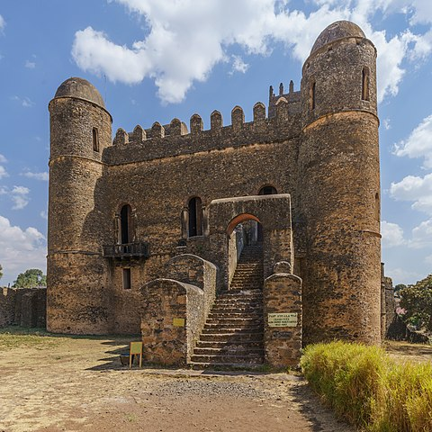
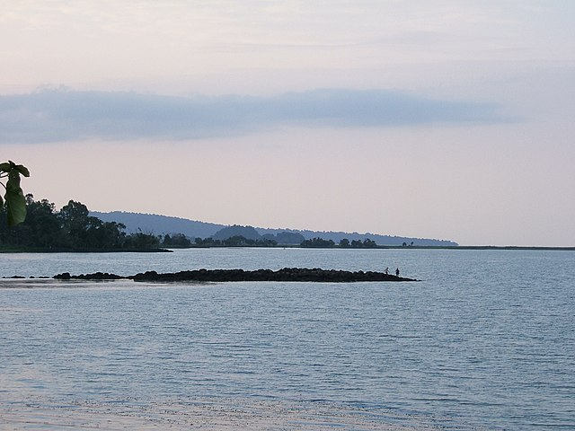
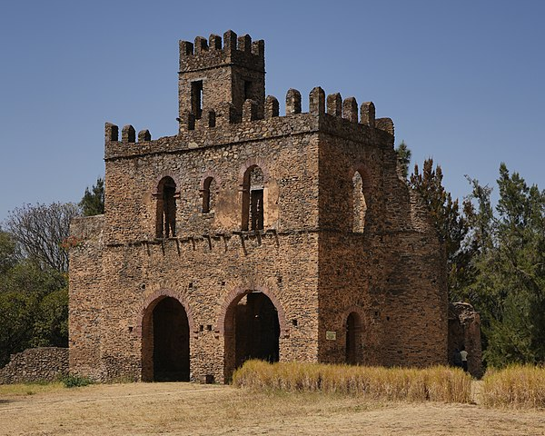

Places Visited



I have had the pleasure of visiting some of Ethiopia’s most iconic locations. In Gondar, I explored the ancient castles that reflect the grandeur of Ethiopia’s royal history. Lake Tana, with its calm waters and historic monasteries, was a serene getaway. The Blue Nile Falls, or "Tis Issat," was a truly awe-inspiring sight, with its powerful cascades and misty atmosphere, leaving me with lasting memories of nature’s beauty.
📖 Read more on Wikipedia